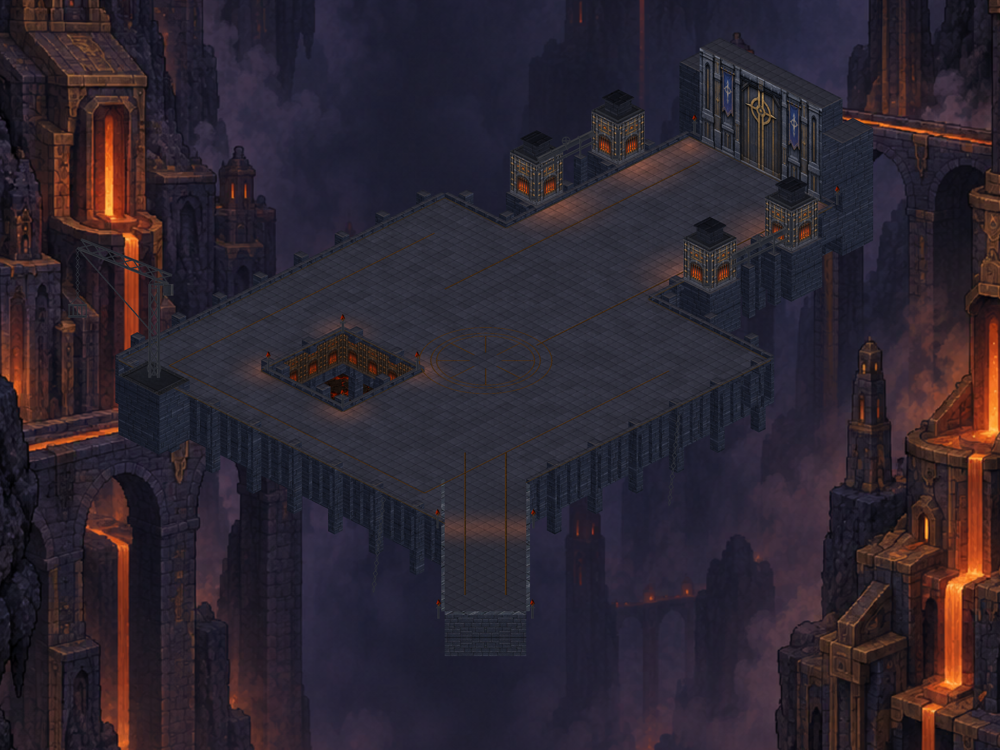
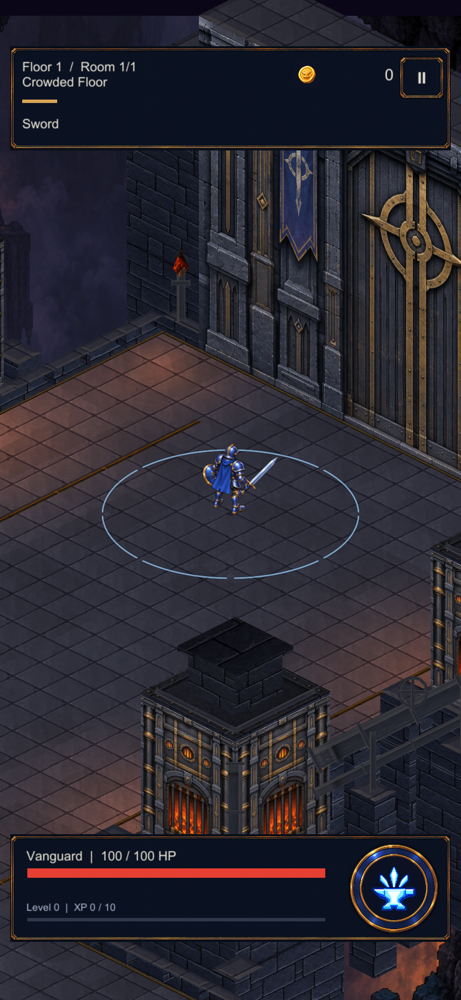
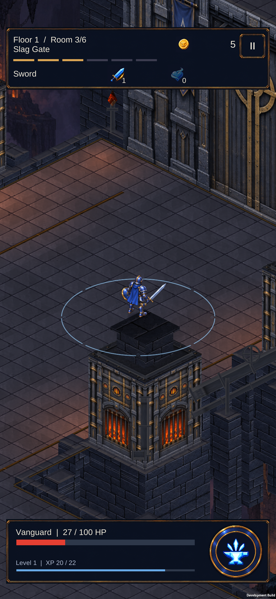

CRYPTFORGE / 24 EYLÜL 2026Dökümhane · sıcaklık ve derinlik
Gerçek Unity sahnesinden aynı açı ve çözünürlükte iki görüntü. Fırın çevresinde sıcak ışık, serin avlu, kenar gölgeleri ve taş kapaklarda daha belirgin yüzeyler. Bu bir konsept resim veya Blender çıktısı değil.

Harita görseline tıklayarak 3200 × 2400 PNG’yi açabilirsin. Aşağıdaki görüntüler gerçek oyun kamerasıyla Unity'de alındı; telefon ekran görüntüsü değildir.
Kapı yaklaşımı

Telefonda doğrulandı
S23'ten gerçek ekran görüntüsü. Yeni sürüm yüklendi; kayıtlar korundu. Enerjisiz hareket de bu sürümde.

Sonraki mimari kalite hedefi: kapı yanları, fırın çatısı ve vinç için daha özgün hacimler. Bu geçişte yeni 3D model veya gerçek zamanlı ışık kullanılmadı.